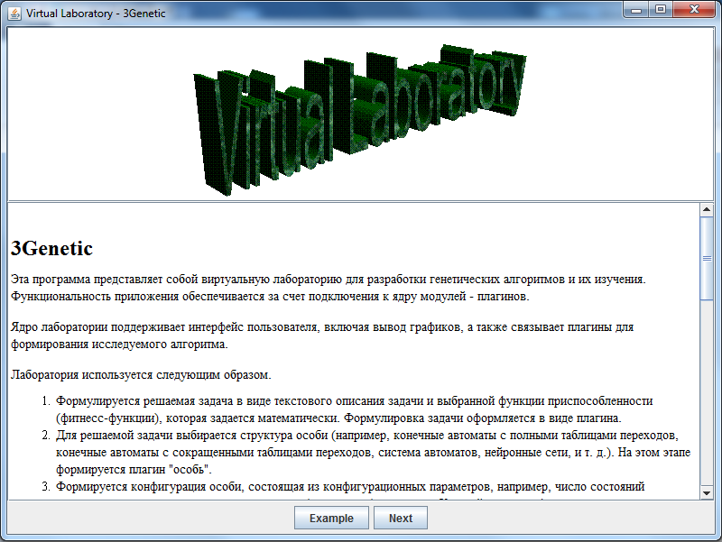
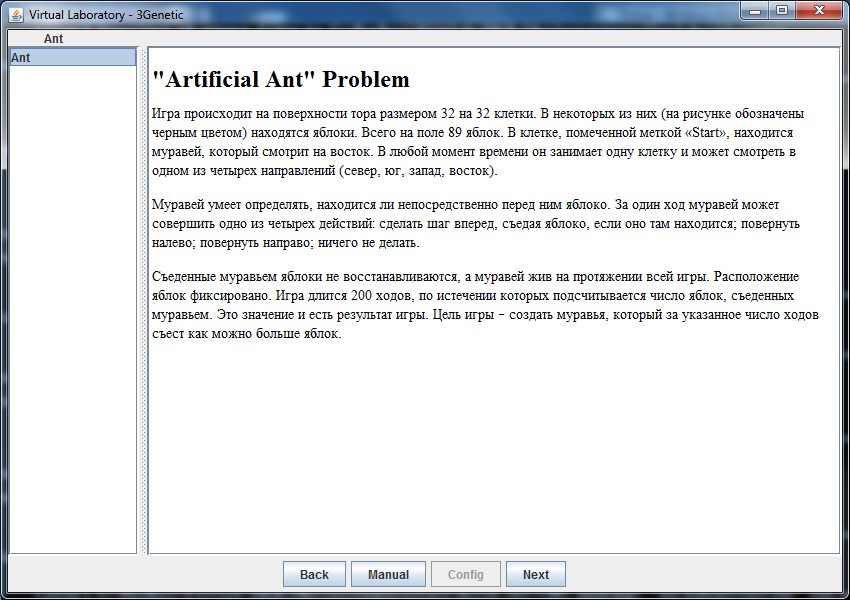
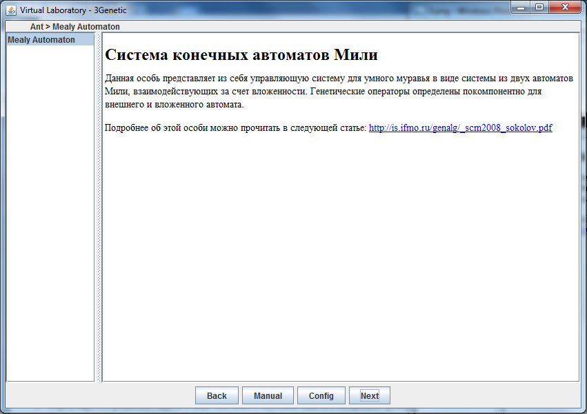
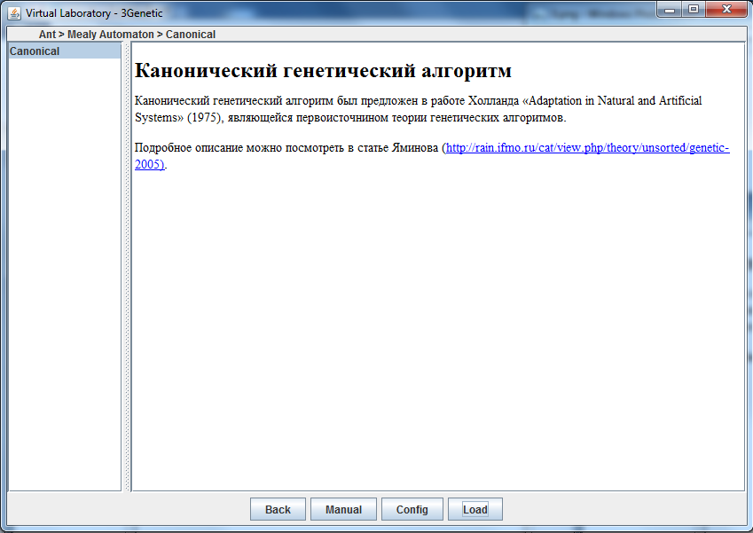
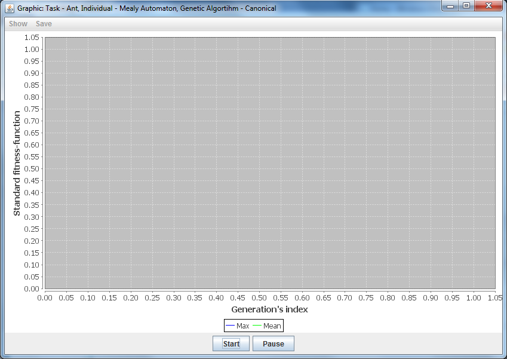
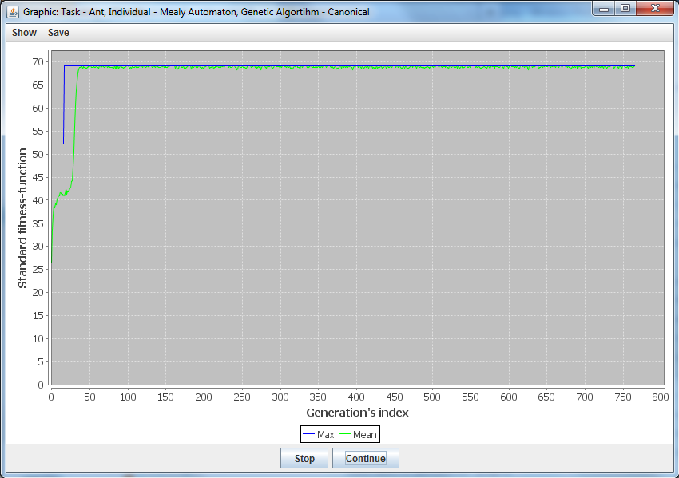
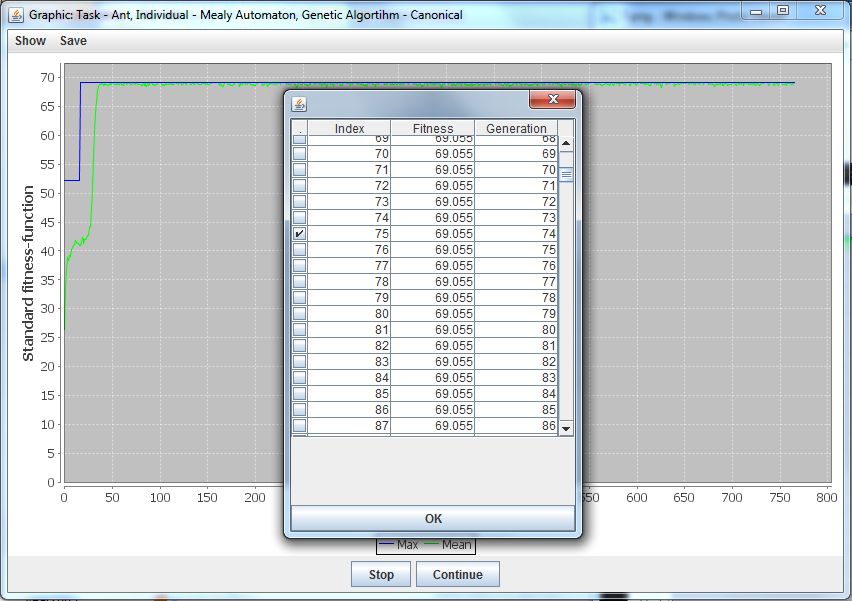
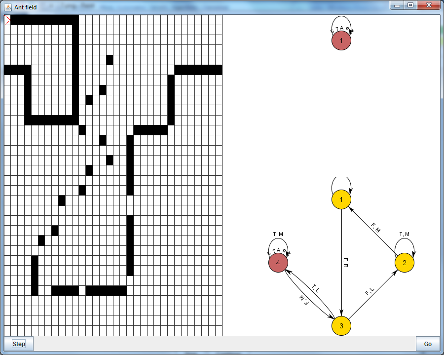

Пример запуска виртуальной лаборатории
Опишем процесс запуска виртуальной лаборатории на примере решения задачи об "умном муравье"
c помощью канонического генетического алгоритма. Чтобы осуществить запуск необходимо выполнить
действия, описанные ниже.
- Убедиться в наличие соответствующих плагинов:
- tasks/ant.jar — плагин задачи об "умном муравье";
- algorithms/simple.jar — плагин канонического генетического алгоритма;
- individuals/mealy.jar — особь, представляющая собой конечный автомат Мили, для задачи об "Умном муравье";
- functors/max.jar — плагин для отображения графика функции максимальной функции приспособленности от номера поколения;
- functors/mean.jar — плагин для отображения графика функции максимальной функции приспособленности от номера поколения;
- visualizators/sAnt.jar — визуализатор для особи mealy.
- Запускаем виртуальную лабораторию при помощи:
- 3genetic.bat — для операционной системы Windows;
- 3genetic.sh — для Unix-like операционных систем.
- В появившемся окне (рис. 1) нажимаем на кнопку Next.
Рис. 1:
Стартовое окно виртуальной лаборатории
|

|
- Теперь на экране (рис. 2) можно видеть описание задач. В меню слева выбираем задачу Ant
и нажимаем на кнопку Next.
Рис. 2:
Окно выбора задачи
|  |
- В меню выбора особи (рис. 3) выбираем особь Mealy Automaton и нажимаем на кнопку Next.
Рис. 3:
Окно выбора задачи
|  |
- В появившемся окне (рис. 4) находится меню выбора схемы генетического алгоритма, выбираем
Canonical нажимаем на кнопку Load. Алгоритм готов к работе.
Рис. 4:
Окно выбора схемы генетического алгоритма
|  |
- Для управления работой алгоритма используются соответствующие кнопки (рис. 5):
- Start/Stop — запуск/остановка алгоритма;
- Pause/Continue — постановка алгоритма на паузу/продолжение работы алгоритма после постановки на паузу.
Рис. 5:
Окно управления работой генетического алгоритма
|  |
- Нажимаем кнопку Start, на экране появляются графики максимальной и средней фитнесс-функции от номера поколения (рис. 6).
После получения желаемых значений нажимаем кнопку Pause.
Рис. 6:
Статистика работы генетического алгоритма
|  |
- При нажатии в меню на кнопку Show, появляется возможность просмотреть лучших особей каждого
поколения и любую особь из текущего поколения. Нажимаем на кнопку Best individuals.
- В появившемся окне выбираем особь, которую хотим посмотреть (рис. 7). Нажимаем на кнопку OK.
Рис. 7:
Окно выбора особи для просмотра
|  |
- Выбираем визуализатор Chebotareva's visualizator. Нажимаем на кнопку OK. Открывается окно в выбранной особью (рис. 8).
Рис. 8:
Окно выбора особи для просмотра
|  |